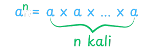
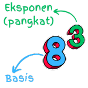
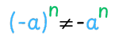

Konsep Dasar
Bilangan berpangkat atau eksponen didefinisikan sebagai berikut:
Jika \(a\) adalah bilangan real dan \(n\) adalah bilangan bulat positif, maka \(a^n\) menyatakan hasil kali bilangan \(a\) sebanyak \(n\) faktor dan dapat ditulis dengan

Bilangan berpangkat dapat dinyatakan dengan \(a^n\), dimana:
- \(a\) merupakan basis atau bilangan pokok,
- \(n\) merupakan pangkat atau eksponen.

Contoh:
- \(2^6=2 \times 2 \times 2 \times 2 \times 2 \times 2\)
- \(15^4=15 \times 15 \times 15 \times 15\)
Video Pembelajaran
Penjelasan tentang konsep dasar bilangan berpangkat
Penjelasan tentang sifat-sifat bilangan berpangkat
Latihan Soal
- Ekspresi \(2^4\) dapat dituliskan menjadi ....
- \(2 + 2 + 2 + 2\)
- \(2 \times 2 \times 2 \times 2\)
- \(4 + 4\)
- \(4 \times 4\)
- \(2 \times 4\)
\(2^4 = 2 \times 2 \times 2 \times 2\) (B) - Ekspresi \(5^3\) dapat disederhanakan menjadi ....
- \(5\)
- \(8\)
- \(15\)
- \(125\)
- \(243\)
\(5^3 = 5 \times 5 \times 5 = 125\) (D) - Ekspresi \(-2^4\) dapat disederhanakan menjadi ....
- \(-16\)
- \(-8\)
- \(6\)
- \(8\)
- \(16\)
\(-2^4 = -\left(2 \times 2 \times 2 \times 2\right) = -16\) (A) - Ekspresi \(\left(-2\right)^3\) dapat disederhanakan menjadi ....
- \(-8\)
- \(-6\)
- \(6\)
- \(8\)
- \(9\)
\(\left(-2\right)^3 = \left(-2\right) \times \left(-2\right) \times \left(-2\right) = -8\) (A)
Fun Fact
Diingat bahwa
